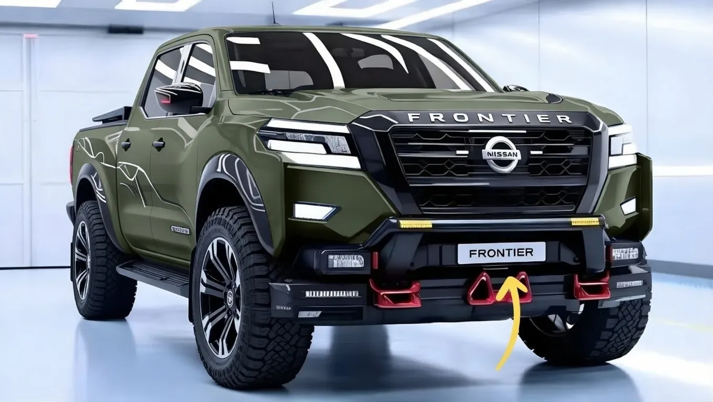

2026 Nissan Frontier Revealed: The Most Powerful Pickup with Advanced Safety & Rugged Capability


The 2026 Nissan Frontier is set to shake up the pickup truck market with its impressive combination of power, capability, and advanced safety features. With estimates suggesting that the new Frontier will boast a significant increase in horsepower, reportedly ranging from 310 to over 400 horsepower, this truck is poised to become a top choice for those seeking a reliable and powerful work vehicle. The Frontier's rugged design and advanced off-road features make it an attractive option for outdoor enthusiasts and construction workers alike.
The current pickup truck market is highly competitive, with models like the Toyota Tacoma and Chevrolet Colorado vying for dominance. However, the 2026 Nissan Frontier's unique blend of power, capability, and safety features is likely to set it apart from the competition. As the demand for capable and safe vehicles continues to grow, the Frontier is well-positioned to meet the needs of a wide range of consumers, from families to fleet owners.
Engine Power and Towing Capacity
The 2026 Nissan Frontier is expected to feature a range of engine options, including a powerful V6 and a potentially even more potent V8. With estimates suggesting that the V6 engine will produce around 310 horsepower and 281 lb-ft of torque, this truck will have ample power for towing and hauling heavy loads. The Frontier's towing capacity is reportedly expected to range from 6,000 to over 9,000 pounds, making it an ideal choice for those who need to tow large trailers or boats.
In terms of transmission, the Frontier will likely feature a smooth-shifting 9-speed automatic, which will provide optimal power delivery and fuel efficiency. The truck's advanced engine management system will also help to optimize performance and reduce emissions. With its powerful engine and advanced transmission, the Frontier is poised to become a top choice for those who need a reliable and capable work vehicle.
For those who require even more power, the Frontier's optional V8 engine is expected to produce over 400 horsepower and 400 lb-ft of torque. This engine will be paired with a heavy-duty transmission and drivetrain, making it ideal for heavy-duty towing and hauling applications.
Off-Road and Rugged Capability
The 2026 Nissan Frontier is designed to handle even the toughest off-road terrain, with a range of advanced features that make it an ideal choice for outdoor enthusiasts. The truck's four-wheel-drive system features a two-speed transfer case and a locking rear differential, which provide optimal traction and control on steep inclines and rocky surfaces. The Frontier's high ground clearance and approach/departure angles also make it well-suited for navigating challenging off-road terrain.
In addition to its advanced four-wheel-drive system, the Frontier features a range of other off-road-focused features, including hill descent control and a multi-mode terrain management system. This system allows drivers to select from a range of pre-programmed modes, including modes for rock crawling, sand, and mud, which adjust the truck's throttle response, transmission shifting, and traction control to optimize performance in different off-road environments.
Also Read
More Tech stories →The Frontier's rugged design and construction also make it an ideal choice for construction and industrial applications, where a durable and reliable vehicle is essential. With its advanced off-road capabilities and durable design, the Frontier is poised to become a top choice for a wide range of industries and applications.
Advanced Safety Features
The 2026 Nissan Frontier features a range of advanced safety features, including a suite of airbags, electronic stability control, and a rearview camera. The truck also features a range of optional safety features, including lane departure warning, blind spot monitoring, and forward collision alert. These features make the Frontier an attractive option for families and fleet owners who prioritize safety.
In addition to its advanced safety features, the Frontier also features a range of convenience features, including a premium audio system, navigation, and a range of connectivity options. The truck's infotainment system features a large touchscreen display and intuitive controls, making it easy to access a range of features and functions on the go.
Key Takeaways
- The 2026 Nissan Frontier features a range of powerful engine options, including a V6 and V8.
- The truck's advanced off-road capabilities make it an ideal choice for outdoor enthusiasts and construction workers.
- The Frontier features a range of advanced safety features, including lane departure warning and forward collision alert.
With its powerful engine, advanced off-road capabilities, and range of safety features, the 2026 Nissan Frontier is poised to become a top contender in the pickup truck market. Whether you're looking for a reliable work vehicle or a capable off-road adventurer, the Frontier is sure to impress.
Price and Trim Levels
Prices for the 2026 Nissan Frontier are expected to start from approximately $30,000 for the base model, with higher trim levels and options pushing the price up to around $50,000 or more. The truck will be available in a range of trim levels, including the base S model, the mid-level SV model, and the top-of-the-line Pro-4X model. Each trim level will feature a unique set of standard and optional features, making it easy to find a Frontier that meets your needs and budget.
The Pro-4X model will feature a range of unique features, including a premium audio system, navigation, and a range of off-road-focused features. This model will be ideal for those who want a capable and luxurious off-road vehicle. The SV model will feature a range of convenience features, including a rearview camera and blind spot monitoring, making it an attractive option for families and commuters.
How It Compares to Tacoma and Colorado
The 2026 Nissan Frontier will face stiff competition from the Toyota Tacoma and Chevrolet Colorado, both of which are well-established players in the pickup truck market. However, the Frontier's unique blend of power, capability, and safety features is likely to set it apart from the competition. The Tacoma is known for its rugged design and off-road capability, but it may lack the power and refinement of the Frontier. The Colorado, on the other hand, is a more refined and feature-rich vehicle, but it may not offer the same level of off-road capability as the Frontier.
In terms of pricing, the Frontier is expected to be competitive with the Tacoma and Colorado, with prices starting from around $30,000 for the base model. The Tacoma and Colorado may offer more aggressive pricing for their base models, but the Frontier's higher trim levels and options may be more expensive. Ultimately, the choice between the Frontier, Tacoma, and Colorado will depend on your specific needs and priorities.
Frequently Asked Questions
What is the towing capacity of the 2026 Nissan Frontier?
The towing capacity of the 2026 Nissan Frontier is reportedly expected to range from 6,000 to over 9,000 pounds, depending on the engine and trim level.
Does the 2026 Nissan Frontier feature a four-wheel-drive system?
Yes, the 2026 Nissan Frontier features a range of four-wheel-drive systems, including a two-speed transfer case and a locking rear differential.
What safety features are available on the 2026 Nissan Frontier?
The 2026 Nissan Frontier features a range of advanced safety features, including lane departure warning, blind spot monitoring, and forward collision alert.
What is the expected price range for the 2026 Nissan Frontier?
Prices for the 2026 Nissan Frontier are expected to start from approximately $30,000 for the base model, with higher trim levels and options pushing the price up to around $50,000 or more.
Conclusion
The 2026 Nissan Frontier is a powerful and capable pickup truck that is poised to make a significant impact in the market. With its range of engine options, advanced off-road capabilities, and safety features, this truck is sure to appeal to a wide range of consumers. Whether you're looking for a reliable work vehicle or a capable off-road adventurer, the Frontier is definitely worth considering.
As the pickup truck market continues to evolve, the 2026 Nissan Frontier is well-positioned to meet the changing needs of consumers. With its unique blend of power, capability, and safety features, this truck is likely to become a top contender in its class. If you're in the market for a new pickup truck, be sure to check out the 2026 Nissan Frontier and see for yourself why it's generating so much excitement.
Mike Reynolds
Senior Editor
Tech journalist with 8+ years of experience covering the latest in smartphones, EVs, AI, and consumer electronics. Bringing you accurate, well-researched stories from the world of technology.
Leave a Comment